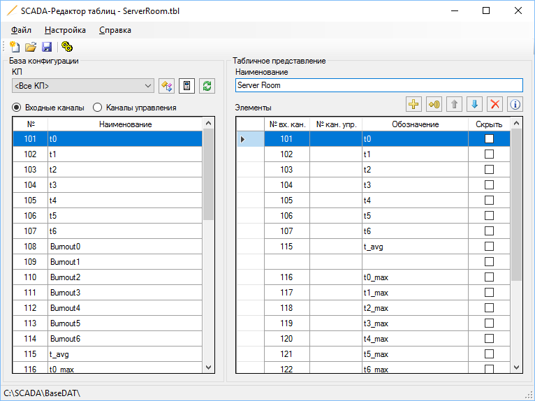

Приложение Редактор таблиц предназначено для создания табличных представлений, которые отображаются на рабочей станции оператора. Редактор таблиц используется инженерами в процессе конфигурирования Rapid SCADA.

Рис. 1. Приложение Редактор таблиц
В левой части окна программы можно выбрать каналы из базы конфигурации и добавить их в табличное представление. Содержимое редактируемого табличного представления показывается в правой части окна.
Каналы управления могут быть привязаны к отображаемым элементам двумя способами:
Скрытые элементы не отображаются на экране, но учитываются при фильтрации событий по представлению в приложении Вебстанция.